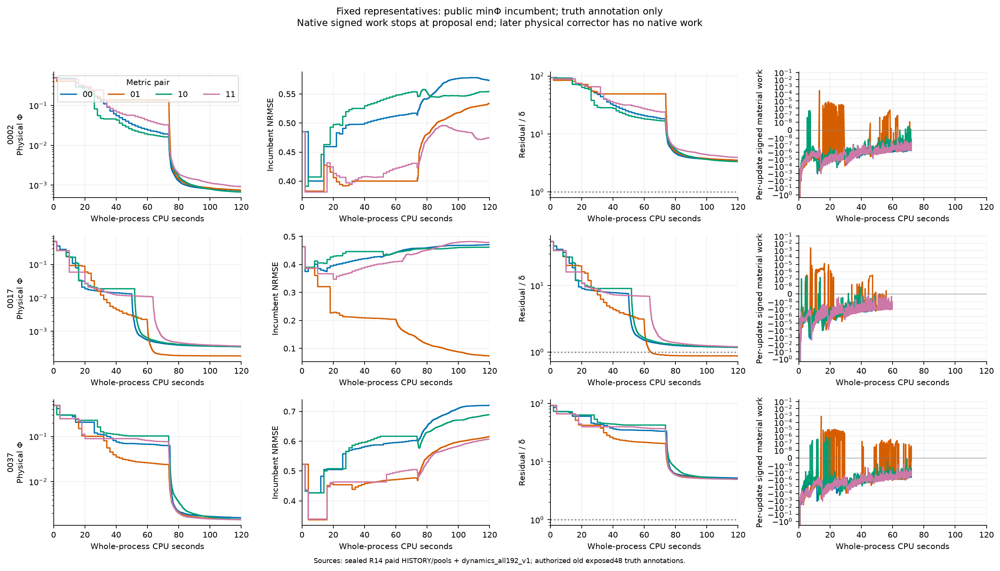
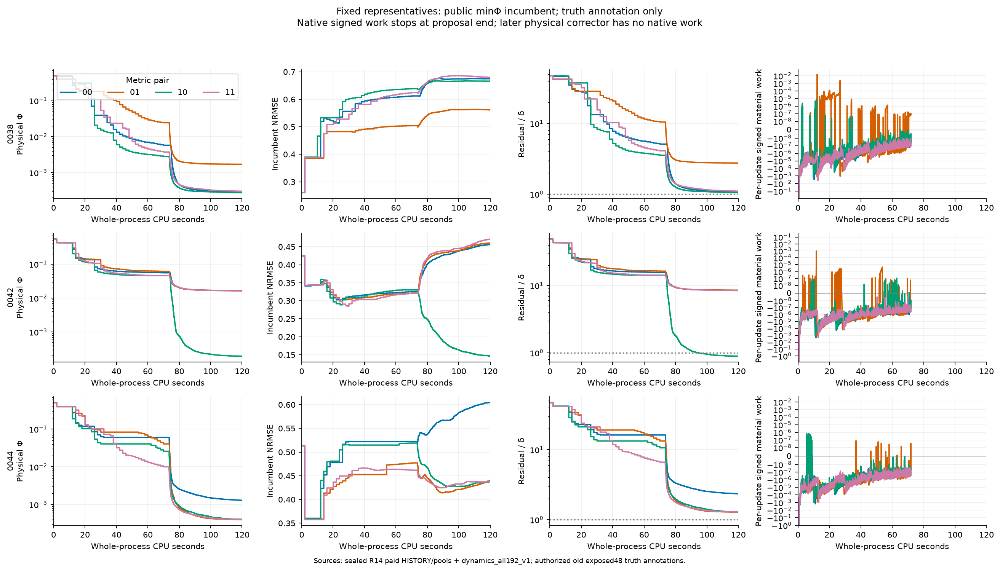
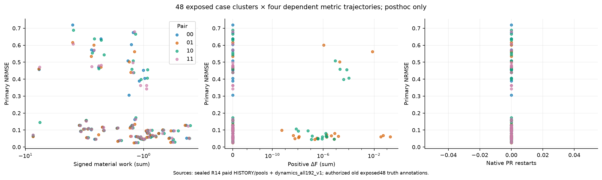
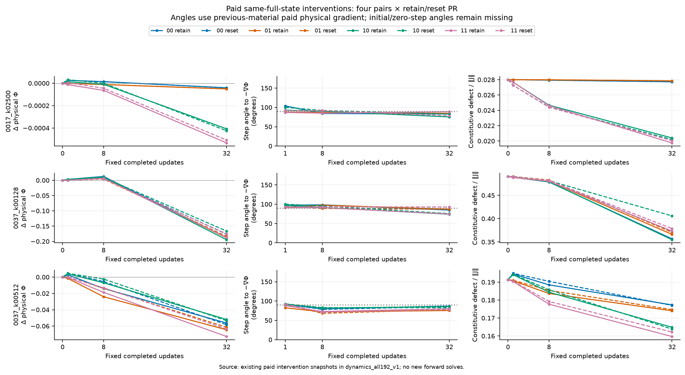

# 已曝光48案例的离线动态附注 192条轨迹、170,917个已付费候选；原生逐步记录519,199条，统计单位为48个case。全部候选NRMSE/IoU只附注，不参与prefix选择。公开eligible/legal且CPU≤120的min(Φ,candidate)维护incumbent；与已封存primary不一致数为0。 完整候选大表仅在Release侧：`/Volumes/migodam's-external-brain/Research/Inv_SLAM/research/delegated/max_struct_r1/r14_worktree/research/research_max_struct_r14/release/recovery_dynamics_v1/ALL_PAID_CANDIDATES_WITH_OFFLINE_TRUTH.csv.gz`；Git忽略。完整INCUMBENT_CHANGES也仅在Release侧（多数候选均改进公开Φ）；Git内仅192行任务汇总和关联小表。 关联表保留有符号材料功、正ΔF、PR restart和各stage步数。CASE_CLUSTER_MEANS先在每case内平均四pair；相关另按每pair的48case计算，并给逐case删除范围。没有以519,199步作独立样本，没有显著性检验，也没有训练预测器。所有关系是已曝光后的描述。 辅助功使用各native stage的当前度量；stage更换后不构成单一跨stage势。公开物理Φ、误差和残差/δ与辅助功分图显示。未返回的超时更新仍由原receipt计费，不能补成已记录步骤。 同state数据：7个完整checkpoint、56枝、224个0/1/8/32快照；168个已有物理梯度角，56个缺失（原因原样保留）。实线保留PR，虚线仅初始清空PR；固定更新数而非等CPU。角度是材料step与前一材料的负物理Φ梯度，不是raw defect向量角，也不是完整32步位移角。 GT参考来自旧generation-paid逆模型缓存，不新跑forward。ALL_PRIMARY_MINUS_KNOWN_GT_REFERENCE给全192行，五个固定严重失败case另列；正Φ差只说明存在已知更好参考，不证明strict local minimum、stationarity或basin。crossgrid参考的离散化限制原样保留。 固定代表0002/0017/0037及互补0038/0042、近失0044，全部四pair，没有事后按最佳误差挑图。物理残差/δ=1仅沿用原noise ball，不是新增成功阈值。 本次离线CPU 18.085031s，wall 19.855012s；新LU/RHS/optimizer均0。原运行与干预成本见源receipt，不能把离线制图成本当recovery成本。本附注不作最终科学或新颖性判断。 记录中的direction_restarted全部为0，因此该变量的相关系数为null；这不等于PR+从未截断或stage换基从未重置memory。阶段0/1/2都记录500步，只有末stage步数变化，相应常量相关也保持null。 五固定失败case为0007/0016/0029/0037/0044，与六个代表动态图集合概念分开；其20个primary的Φ均高于旧GT参考。另附已有endpoint_stationarity_v1中的PG/方向导数/曲率，未重跑forward或据此改变预测。 Pair标签首位为current metric、次位为material metric；四色与所有页保持一致。原候选HISTORY、pool及nogt summary路径由PUBLIC_PLAN_BEFORE_TRUTH与源receipt追溯。 布局修订把累计材料功改为逐步signed work（避免初始负功掩盖正功），稀疏化log刻度并移开图例；原图保留audit/recovery_dynamics_v1/first_layout。 离线候选primary指标复用核验192/192相符，NRMSE/IoU最大差均严格0。165,467次公开incumbent变更中有60,580次NRMSE上升；这是依赖路径上的计数，不是独立样本比例或恢复因果结论。 已测量完成的Python正文CPU合计 34.495055s（含数据/布局重绘）；另一次纯布局重绘因已有表独占写入失败，确切CPU未捕获，因此该合计不宣称完整总成本。失败原因、原图及各成功重绘receipt保留；全部离线尝试新LU/RHS/optimizer为0。




